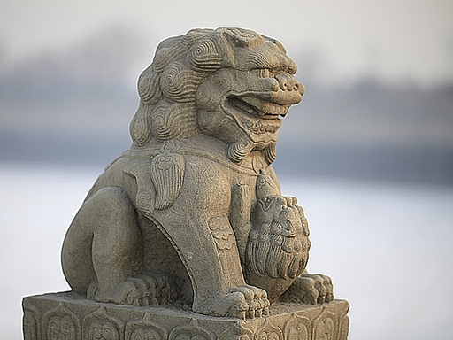
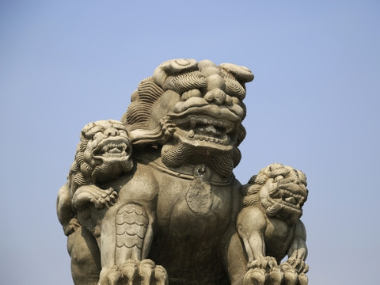
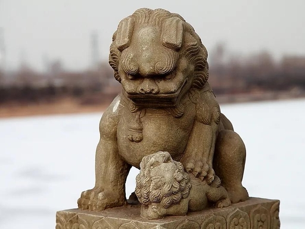

一狮一姿态 · 一雕一匠心 · 千年守望

昂首挺胸，目光远望，气势沉稳威严，是卢沟桥最具代表性的守护石狮。它象征镇守一方、护佑平安，姿态刚劲有力，尽显北方石雕雄浑大气的气质，也是桥上最具威仪的经典造型。

母狮温柔环抱幼狮，小狮子或依偎怀中，或攀爬嬉戏，是卢沟桥最温情的经典形象。它不仅展现动物天性中的亲情暖意，更暗含传统家庭伦理与生生不息的文化内涵，充满人情味。

低首内敛，神态沉静安详，线条柔和流畅，呈现东方美学独有的含蓄与静气。这类石狮气质文雅温润，褪去了威严凌厉，多为明清时期雕刻，极具艺术观赏价值与人文气息。